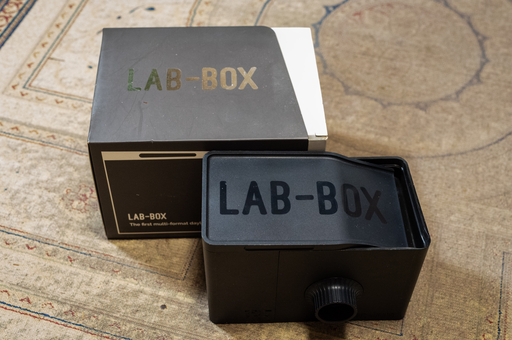

自分の中では Lomography というとどちらかというと色物フィルム、色物フィルム・カメラ・ブランドというイメージがあります。やはり普通の写真が撮れないので。気分を害する愛好者の方がいたら伏してお詫びします。
そんな印象を持っている Lomography ですが、CP+2025 で自家現像の世界を変えるようなゲームチェンジャーとなる製品が発表されました。
新しい現像タンクの見た目について、CP+の会場ではお弁当箱に似てるとよく言われますが、みなさんには何に見えますか…？ pic.twitter.com/VrBmH4o9HJ
— Lomography Japan (@lomographyjapan) March 1, 2025
しかももう Lomography の公式オンラインショップで販売されています。
こいつの何がすごいのかと言うと:
というところにあるかと思います。
これから自家現像を始めようという人にとって、ダークバッグが不要になり、フィルム・ピッカーも付属することから、安価に自家現像を始める助けになります。なにげにダークバッグはそこそこのお値段がしますので。
あくまで現時点での概算ですが PATERSON、Jovo、LP の後継中国製現像タンクのいずれかと、ダークバッグ、フィルム・ピッカーを合計するより、この Lomography の Lomo Daylight Developing Tank 35mm の方が総額で安くつきます。135 フィルムでしか撮影しないなら、この製品のほうがお得だと現時点では言えます。
ここでダークバッグが不要な現像タンクには LAB-BOX があるぞ、という声も聞こえてきそうです。
実は持ってて一時期使ってました。でも最近は出番がまったくありません。理由はいくつかあります。
そんなこともあり LP や PATERSON の普通の現像タンクに自分は戻ってしまいました。LAB-BOX のようなギミックは好物ですが、現像時にトラブルが頻発する、フィルムカッターが錆びたら全てを分解してカッターを研いでサビを落とさないといけなくて、苦労して再び組み立てしないといけない、などメンテナンスが大変というのは非常に困ります。なので使わなくなってしまいました。
あと価格が 26000 円を越えるので (Amazon だと +10000 円の価格がついてた。個人輸入したほうが安い)、安価に自家現像を始めたい、また自家現像は初めてでよくわかってない、って人にはとてもお勧めできない現像タンクが LAB-BOX になるのかなぁ、と。
通常の現像タンクを使ってのフィルムの現像は以下の動画のように行っていきます。動画の作者さんは PATERSON の 135 フィルムなら 2 本同時に現像してるタンクを使っていますね。
動画の最初の方にダークバッグを使って、リールにフィルムを装填しているところが写ってます。Lomography の新製品はこのダークバッグが不要になります。
Lomography の公式サイトにも動画が貼り付けらています。この動画を見るとどうやってリールにフィルムをロードして、キャニスターからカットするのかがわかります。その部分だけ見て自分はこの現像タンクが欲しくなりました。ロード自体手動なので (LAB-BOX も手動ですが)、よほどの怪力でない限り壊してしまう心配もないでしょう。
この動画を見るとキャニスターの再利用がしやすいってこともわかります。長巻フィルム派にも優しい仕組みになっています。
あと動画を見てるとわかるのですがリール自体は 135 フィルムだけではなく 120 フィルムのロードできるのでは？という構造が見て取れます。もしかすると将来 120 フィルムを現像できる大きさのタンクも発売されるのかも知れません。Lomography は 120 フィルムを使うカメラも販売してますし、有り得そうです。
もしかすると 110 フィルムと 110 用カメラも販売しているので、110 フィルムを現像できるようにしちゃう可能性も考えられます。そうなってくると夢が広がりんぐって感じになっていきますね。
Lomography の Lomo Daylight Developing Tank 35mm はいいですぞ。